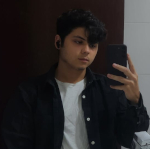

/lucasehostim - me siga no meu instagram pessoal!todo_dia_monster_de_cafe - meu instagram alternativo na qual ganhei seguidores de forma orgânica utilizando um script python desenvolvido por mim
/lucasehostim - me siga no meu instagram pessoal!todo_dia_monster_de_cafe - meu instagram alternativo na qual ganhei seguidores de forma orgânica utilizando um script python desenvolvido por mim
Me chamo Lucas Eduardo Hostim, estudante de programação já tive experiência em diversas àreas
hoje estudo via o curso em vídeo do Gustavo Guanabara estudando sobre html e css.
/lucasehostim - me siga no meu instagram pessoal!todo_dia_monster_de_cafe - meu instagram alternativo na qual ganhei seguidores de forma orgânica utilizando um script python desenvolvido por mim